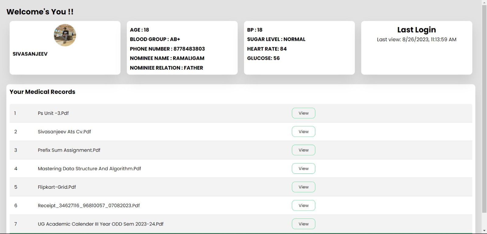
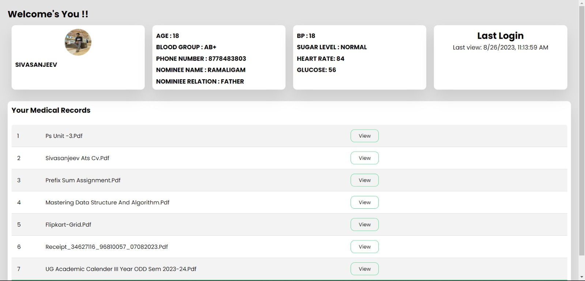

Care Sync is a transformative healthcare project that harnesses fingerprint scanning technology for user authentication and data security. It allows rapid access to a patient's complete medical history from anywhere within a hospital or ambulance, sending automatic SMS notifications to nominated contacts during emergencies. Patients can securely access their medical records through fingerprint and OTP authentication, fostering active participation in their healthcare. Care Sync is set to revolutionize medical emergency response by providing swift, secure, and informed care.
Tech Stack Used :
- MERN stack - MongoDB , Express JS, React JS, Node JS
- C# - fingerprint device control
Care Sync leverages the power of the MERN stack for robust development, incorporates a customized CSharp code to handle fingerprint scanning, and integrates seamlessly with the Fast2SMS API for efficient SMS notifications, creating a comprehensive healthcare solution.
 
